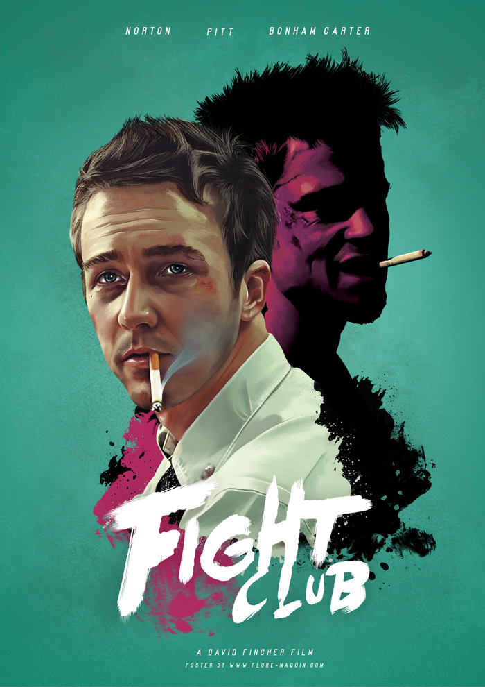
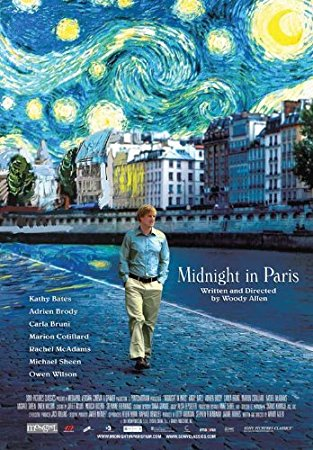
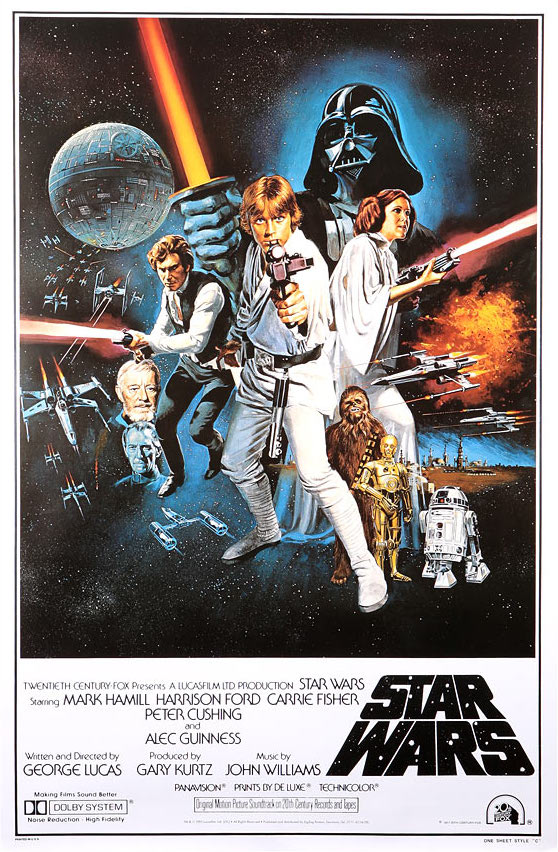

00

00

00

00
We will now be paying attention to the backgrounds of film posters. We already paid attention to the compositions of film posters:
the foreground and basics about the background. We will now be going over what is commonly found in the backgrounds of film posters
in more detail. Like all other components of film poster design, film poster backgrounds follow patterns of only a very few choices.
We will first be looking at the solid color background. Many film posters are designed on a background of a solid color. The posters
of the films Fight Club and Black Swan are good examples of such a design. A solid colored background tends to look pleasant but feel
quite stagnant. It also brings more attention to the foreground. In these cases, it is important to pay attention to the mood evoked by the chosen color for it is generally the color
that dominates the poster. Read more about color psychology to understand the meanings
and effects of color on us.
Another common background choice found in movie posters is one revealing a location, usually one that is significant in the film. The
background of the poster of the film, Midnight In Paris, reveals an image of a river, probably the Seine, under Parisian-looking buildings.
Above the city scene is a portion of Vincent van Gogh’s famous painting, The Starry Night.
These types of backgrounds reveal enough of a film’s ambiance to attract an audience.
Lastly, a common occurrence in film poster backgrounds is the appearance of secondary characters, specific objects related to the film…
This is done to reveal major plot points. This can be found in the poster for the film, Star Wars: Episode IV - A New Hope.